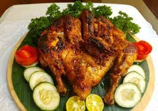

Ayam Bakar Taliwang

Bahan :
- 1 ekor ayam kampung
- 2 bahan jeruk kunci/nipis
- 1 sdm kecap manis
- 100 gram gula merah sisir
- 3 lembar daun jeruk
- 2 batang sereh geprek
- 500 ml santan + air
- Garam secukupnya
- Timun iris
- Bumbu halus : 10 buah cabe keriting, 3 buah cabe rawit, 10 buah bawang merah, 6 buah bawang putih, 2 sdt terasi bakar, 1 buah tomat, 1 cm kencur
Cara :
- Bersihkan ayam belah dua, marinasi ayam dengan jeruk kunci/nipis.
- Panaskan minyak di wajan tumis bumbu halus, sereh geprek dan daun jeruk sampai wangi.
- Masukkan ayam aduk rata.
- Tambahkan santan, air, gula merah, kecap manis dan garam ungkep ayam.
- Masak Ayam sampai empuk bumbu mengental.
- Panggang bolak balik dengan grill pan sambil diolesi sisa bumbu tadi.
- Angkat dan sajikan dengan timus tiris.